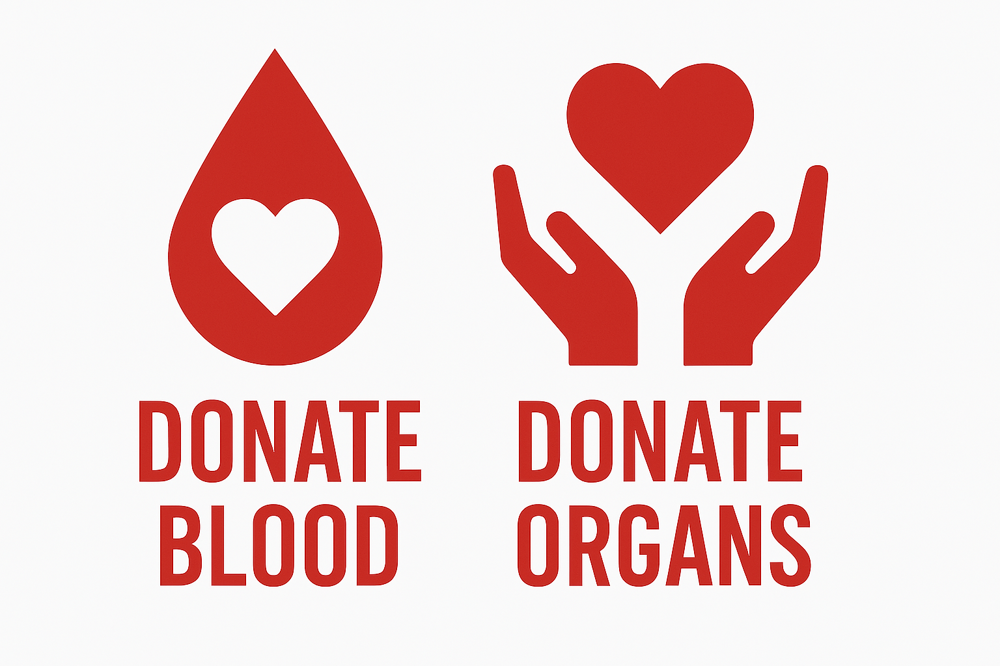

DONAZIONE DI SANGUE E ORGANI

UN GESTO CHE SALVA VITE
La donazione di sangue e organi rappresenta uno dei gesti più nobili di solidarietà umana. Una singola donazione di sangue può salvare fino a tre vite, mentre la donazione di organi può offrire una seconda possibilità a chi soffre di patologie gravi.
TIPI DI DONAZIONE
COME DONARE IL SANGUE
Per diventare donatore di sangue è necessario:
- Avere un'età compresa tra i 18 e i 65 anni
- Pesare almeno 50 kg
- Godere di buona salute
- Condurre uno stile di vita sano
La donazione dura circa 10 minuti e può essere effettuata dopo un colloquio con un medico e alcuni esami di controllo preliminari.
DONAZIONE DI ORGANI
La donazione di organi può avvenire:
Da vivente:
Rene, parte del fegato, midollo osseo
Post mortem:
Cuore, polmoni, fegato, pancreas, intestino, reni, cornee, ossa, vasi sanguigni
Per esprimere la volontà di donare i propri organi è possibile registrarsi presso l'ASL, firmare una dichiarazione al momento del rilascio o rinnovo della carta d'identità o compilare il tesserino del donatore.
DOVE DONARE
È possibile donare il sangue presso:
Centri trasfusionali ospedalieri
Unità di raccolta AVIS o altre associazioni
Autoemoteche in occasione di eventi speciali
IL TUO IMPATTO
3
Vite salvate con una donazione di sangue
8
Organi che possono essere donati
10 min
Tempo necessario per donare il sangue
Diventa un eroe silenzioso
Il tuo gesto può fare la differenza tra la vita e la morte. Unisciti alla famiglia dei donatori.
Diventa Donatore